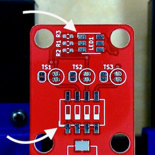
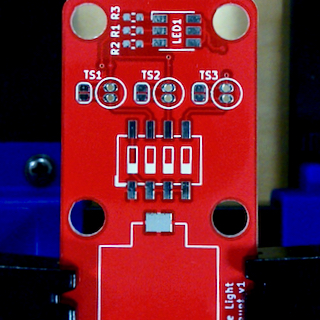
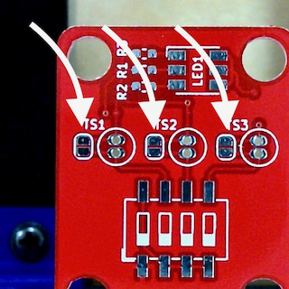
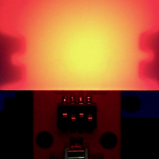
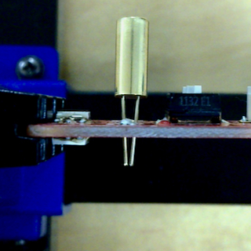

You should have: one switch bank (of four switches), six tiny resistors, two LEDs, one tilt
switch, and one battery holder. Do not remove the resistors and the LEDs from their packaging
until you are ready to solder them.
Equipment
You should have: a magnifier (with interchangeable lenses), a PCB holder, a (capped) flux syringe,
a flux dispensing needle, a tube of solder (coiled), a set of tweezers, a tube of desoldering
solder (not coiled), a pair of flush cutters, a spool of copper braid, a soldering iron with a
fine tip, a brass sponge (in a holder), and a fume extractor (not pictured).
General flow
Location
Check component outlines printed on the board to see on which side the component should end up.

Orientation
Some components can go onto the board multiple ways, but only one is correct; look for board
markings and solder pad shapes.
Solder one lead
Always start by soldering just one lead.
Position
Make sure that all component leads are lined up with their respective pads.
Solder in remaining leads
Solder the rest of the leads.
Soldering
Keep your soldering tip clean
Swipe it back and forth on the brass tip cleaner; use one hand to hold down the cleaner.
Coat the soldering tip
Coat the soldering tip with a small amount of solder.
Apply flux
Before soldering, apply flux to the pads.
Coat a pad with solder
Before placing the component on the board, coat one pad with solder; corner pads are best.
Place the component
Place the component on the pads; it will not sit flush because you coated one pad.
Heat the coated pad
Heat the pad you previously coated with solder; press down on the component with tweezers. The
component may shift as you do this; that's okay.
Adjust position
If the component is not correctly positioned, reheat the pad and adjust placement with tweezers.
Solder remaining pads
Solder the remaining pads.
Switches

Location
There is one component; it contains four switches.
Orientation
Orientation doesn’t really matter, but these instructions assume the “on” side is closer
to the LED.
LEDs
Location
There are two LEDs, one on each side of the board.
Orientation
Orientation matters; the marked corner of the LED goes to the marked corner of the outline.
Resistors
Location
There are six resistors — three on each side of the board and all identical; they are very small.
Orientation
Orientation doesn’t matter.
Battery holder
Location
There is one battery holder.
Orientation
Orientation doesn't matter.
Fixing soldering mistakes
Reflow
If you end up with an unwanted connection between adjacent leads, sometimes it's enough to just
simultaneously heat both and let the solder reflow.
Removing excess
If you end up with too much solder, you can remove it with copper braid, which wicks up solder.
Copper braid
Make sure you hold copper braid by the plastic container, not by the metal.
Desoldering
Desoldering solder
If you need to reposition or remove a component, you will have to desolder it completely and start
over, using desoldering solder aka rework solder, which stays liquid for much
longer than regular solder.
Liberally apply desoldering solder
The goal is for most leads on the same side of the component to be in one blob of desolding
solder.
Heat all leads of the component
Because of how slowly this solder cools, you have a few seconds, but you still have to move
quickly.
Push the component
While heating the leads all around, apply firm, but gentle, sideways pressure on the component
with tweezers.
Clean the board
After the component slides off, clean off all the solder on the pads using copper braid.
Clean the component
Also clean off the solder from the component before you solder it back in.
Start over
You can now solder the component back in; remember to re-flux.
Solder jumpers

Location
There are three solder jumpers.
Soldering
Put a small blob of solder across the two pads of each jumper.
Testing
Turn everything off
Flip all four switches to off (towards the “1”-“4” labels and away from the “on” label).
Insert a battery
Slide it under the metal clip.
Test blue
Flip switches to on-on-off-off; both LEDs should be blue.

Test red
Flip switches to on-off-on-off; both LEDs should be red.
Test green
Flip switches to on-off-off-on; both LEDs should be green.
Pick a color pair
Your LEDs will show one color with the board right side up, and the other when you flip the board.
Green / teal or
Red / purple
Desolder the solder jumper #1 and solder in tilt switch #1.
Blue / purple or
Green / yellow
Desolder the solder jumper #2 and solder in tilt switch #2.
Blue / teal or
Red / yellow
Desolder the solder jumper #3 and solder in tilt switch #3.
Tilt switch
Location
There are three places for a tilt switch; you will solder in one (based on the color choice you
made before).
Desolder jumper
Desolder the jumper next to the tilt switch using copper braid.

Orientation
Orientation doesn't matter.
Prep
Slightly bend the leads to keep it from falling out.
Height
Make it about the same distance from the board as the height of the switches.
Finishing up
After soldering in the tilt switch, clip off excess leads.